Conceito — o potássio em dois balanços
Homeostasia do K⁺. O corpo mantém a caliemia numa janela estreita
(3,5–5,0) defendendo o gradiente transcelular e ajustando a excreção renal. As Fig. 1–13 voltam no Caso,
na Trilha e na Avaliação. Atribuição em CREDITS.md (em curadoria).
1. 98% do K⁺ é intracelular — o plasma é a ponta do iceberg
A caliemia mede só os ~2% extracelulares. O estoque pode estar depletado com plasma normal: o shift mascara.
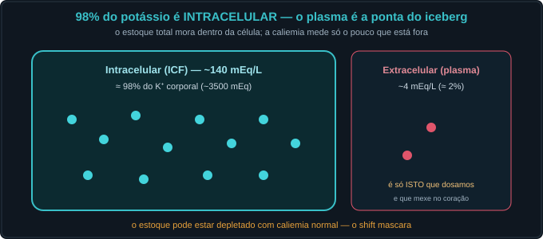
2. O balanço INTERNO — o shift transcelular (minuto a minuto)
Insulina, β-agonista e alcalose empurram K⁺ para dentro (↓ plasma); acidose, lise celular e déficit de insulina o empurram para fora (↑ plasma) — sem mudar o estoque.
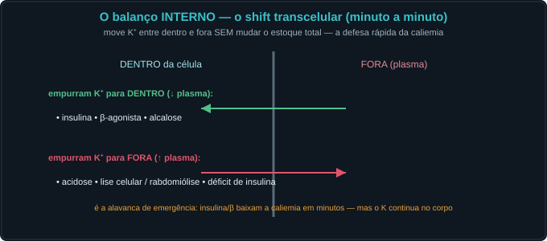
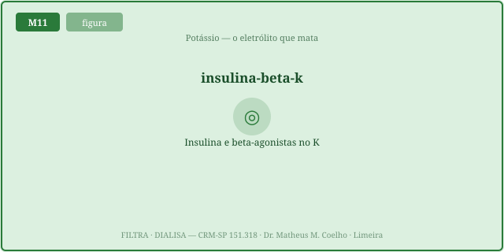
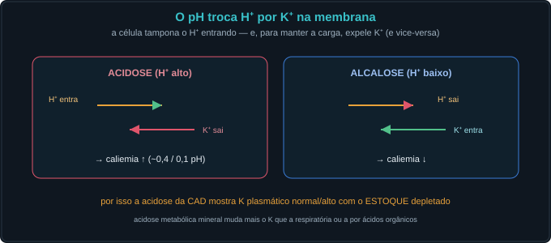
3. O balanço EXTERNO — a secreção distal (horas a dias)
O rim ajusta o estoque secretando K⁺ na célula principal do ducto coletor (M8): precisa de aldosterona E de aporte distal de Na⁺/fluxo — multiplicativo.

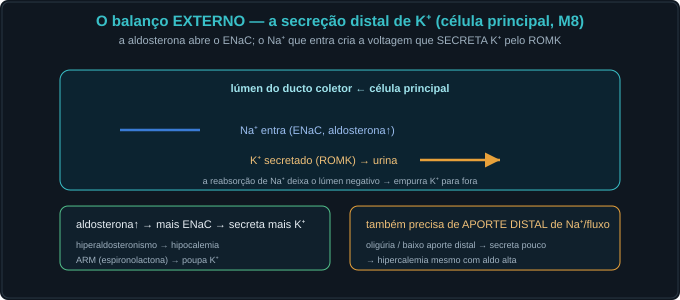
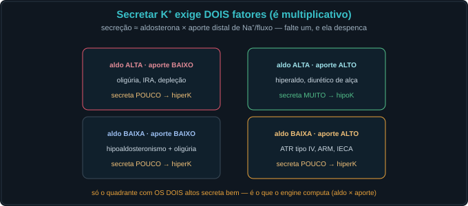
4. Por que o K⁺ mata — o potencial de membrana (Nernst)
A caliemia fora da célula fixa o potencial de repouso: Em ≈ −61·log(K_in/K_out). Fora da janela 3,5–5,0, a excitabilidade do miocárdio falha.
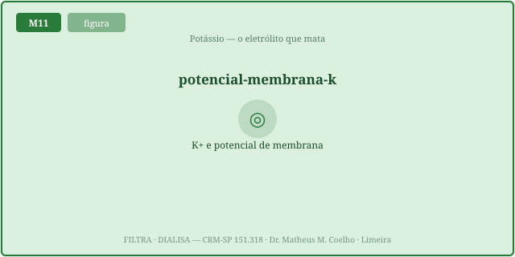
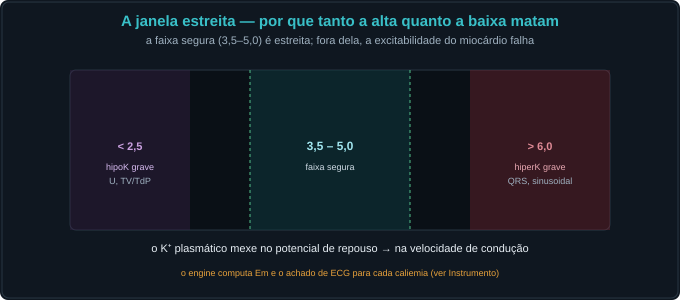
5. O ECG como mecanismo — os dois retratos
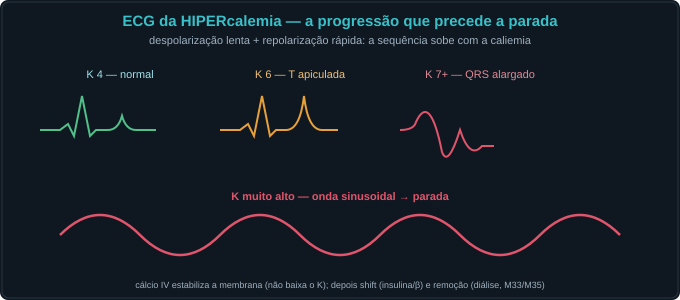
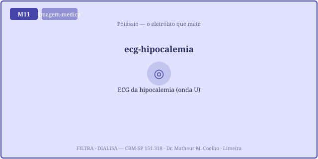
6. As armadilhas e a conduta
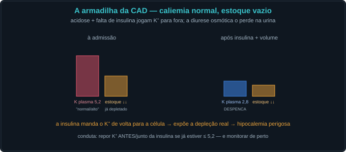
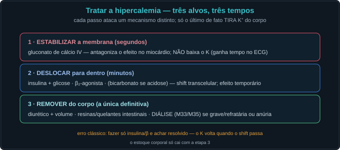
Caso — oito atos, decida antes de revelar
Paciente diabético, mal-estar, fraqueza. K⁺ inicial 5,4 mEq/L, pH 7,12, glicemia altíssima.
Trilha socrática — treze perguntas que constroem o conceito
1. Que fração do K⁺ é intracelular?
~98%. A caliemia mede só os ~2% extracelulares — a ponta do iceberg.
2. O que é o balanço INTERNO?
O shift transcelular: move K⁺ entre dentro/fora em minutos, sem mudar o estoque total.
3. O que empurra K⁺ para DENTRO?
Insulina, β-agonista e alcalose (ativam a Na/K-ATPase ou trocam por H⁺) → ↓ caliemia.
4. O que empurra K⁺ para FORA?
Acidose, déficit de insulina e lise celular (rabdomiólise, hemólise) → ↑ caliemia.
5. Quanto a acidose muda o K⁺?
Cerca de 0,4 mEq/L por 0,1 de queda no pH (mais na acidose mineral que na orgânica/respiratória).
6. O que é o balanço EXTERNO?
A excreção renal: secreção distal de K⁺ na célula principal do ducto coletor (ROMK), em horas/dias.
7. De que a secreção distal precisa?
De aldosterona E de aporte distal de Na⁺/fluxo — é multiplicativa; falte um, ela despenca.
8. Por que a oligúria dá hipercalemia?
Sem fluxo/aporte distal, não há como secretar K⁺ — mesmo com aldosterona alta.
9. Por que o K⁺ mata?
Define o potencial de repouso (Nernst): muda a excitabilidade do miocárdio. Os dois extremos são fatais.
10. HiperK no ECG?
T apiculada → PR longo/P alargada → QRS largo → onda sinusoidal → parada.
11. HipoK no ECG?
T achatada, onda U, QT/U longo → TV/torsades. Corrigir K⁺ e magnésio.
12. A armadilha da CAD?
Caliemia normal/alta com estoque depletado; a insulina expõe a hipocalemia. Repor K⁺ se ≤ 5,2.
13. A escada de tratamento da hiperK?
Estabilizar (cálcio) → deslocar (insulina/β) → REMOVER (diurético, resina, diálise). Só o último tira K⁺ do corpo.
Instrumento — o potencial de repouso × a caliemia (Nernst)
Os controles do Lab definem a caliemia; aqui vê-se o Em (mV) resultante. Fora da janela 3,5–5,0, o miocárdio falha — a marca mostra o ponto atual e o achado de ECG.
Laboratório — estoque, shift e excreção
| Variável | Atual | Comentário |
|---|---|---|
| K⁺ plasmático (mEq/L) | — | janela 3,5–5,0 |
| Potencial de repouso Em (mV) | — | Nernst |
| Shift transcelular (mEq/L) | — | pH+insulina+β |
| Secreção distal (relativa) | — | aldo × aporte |
| ECG | — | por mecanismo |
| Classe | — | — |